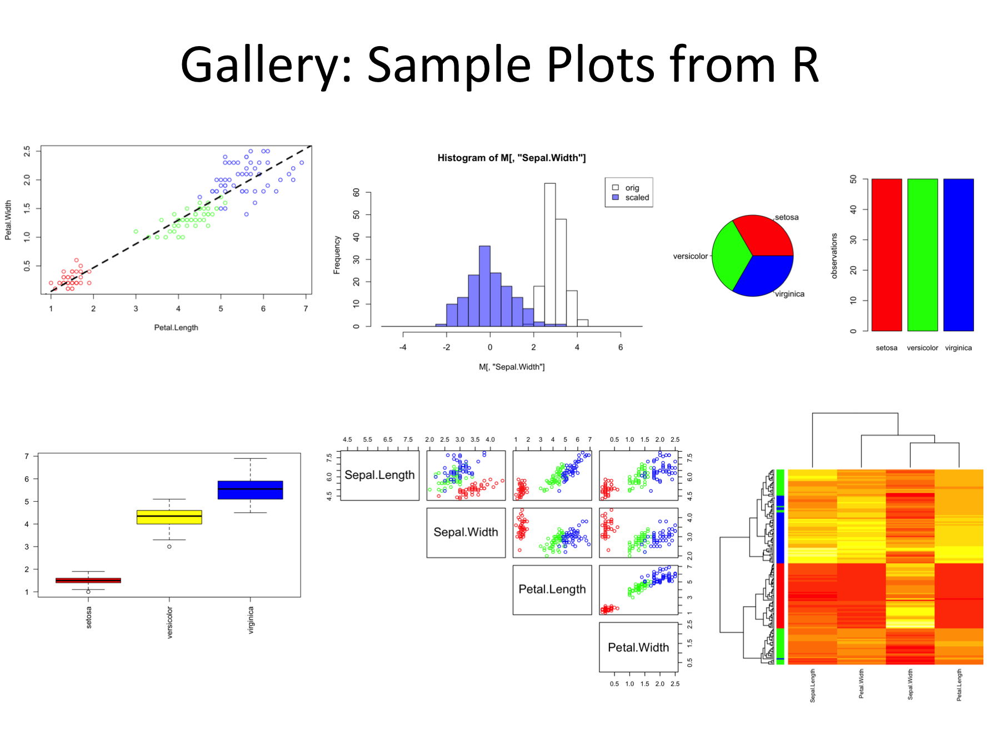

00: Introduction
Block 1: Groundwork
- Starting RStudio: a GUI for R
- Simple functions (input, output, parameters & help)
- Data: I/O, Types, Formats & Structures
Block 2: Speaking about Data
- Data Descriptions
- Data Visualization: simple plots and advanced heatmaps
- Data Models: linear models
Block 3: Open the universe
- installing and using packages
- tidyverse: data cleaning, filtering, merging
Block 4: Advanced topics and case studies
- R scripts, R markdown & reproducible analyses
- data exploration
Goals:
After the course you will be able to
- understand the basic syntax of R
- find help for more nifty problems
- install and use packages for your specific questions
- see the limitations of EXCEL
- understand the importance of structured data
- understand some bioinformatics jargon
- understand common difficulties in data analysis
- increase the value of your CV
- produce figures such as

Non-Goals:
This course does not teach
- programming new tools: focus on existing tools
- bioinformatics: BSc course (3 yrs ++)
- NGS analysis: other programs (Linux, Galaxy, deepTools)
Why R ?
- Standard software for data analysis, statistics, and visualization
- free and community support
- many packages available (for data I/O, manipulation, high-end: expression analysis)
- good compromise between flexibility (programming) and box-solutions (packages)
- suitable for very large dataset (filtering, merging)
- interactive and scripting
- not the best solution for everything (e.g. mapping)
- frequent requirement during (bioinformatics) hiring
Embrace the learning curve
- steep (but rewarding)
- First hurdles:
- it’s a new language: vocabulary & grammar
- choices: many ways to say (to program) the same things
- more choices: many (redundant) packages
- computers are stubborn and stupid: they do not think along
- More hurdles
- case sensitivity: \(a \ne A\)
- parameter sensitivity
- sofware dependencies